Hint: click on top-level headers to toggle visibility of that section.
Observables (xmin, xmax, nbins):
Background processes:
Signal processes:
Nuisance parameters (includes only those which apply to the background-only model):
Rates for all observables and processes as given by the 'nominal' templates. If errors are given, they are MC stat. uncertainties.
| process / observable | ee | ele_3jets_1btag_mttbar | ele_4jets_0btag_mttbar | ele_4jets_1btag_mttbar | ele_4jets_2btag_mttbar | emu | mu_3jets_1btag_mttbar | mu_4jets_0btag_mttbar | mu_4jets_1btag_mttbar | mu_4jets_2btag_mttbar | mumu |
|---|---|---|---|---|---|---|---|---|---|---|---|
| DY | 405.27 | --- | --- | --- | --- | 178.93 | --- | --- | --- | --- | 422.18 |
| VV | 11.509 | --- | --- | --- | --- | 32.265 | --- | --- | --- | --- | 15.356 |
| WJets | 16.716 | --- | --- | --- | --- | 26.213 | --- | --- | --- | --- | --- |
| qcd | 41.863 | 490.84 | 1398.1 | 504.07 | 210.04 | 102.91 | 163.59 | 195.15 | 104.27 | 152.12 | 50.105 |
| singletop | 105.62 | 426.65 | 157.71 | 344.48 | 183.48 | 343.51 | 549.2 | 201.3 | 422.02 | 227.8 | 120.77 |
| ttbar | 2208.9 | 4297.1 | 2389.7 | 6168.5 | 4758.8 | 7324.8 | 5599.9 | 2980.6 | 7783.6 | 6078 | 2546.9 |
| wb | --- | 357.9 | 168.18 | 275.75 | 90.508 | --- | 459.4 | 210.18 | 342.85 | 108.18 | --- |
| wc | --- | 508.85 | 1332.7 | 392.73 | 27.53 | --- | 623.12 | 1610.8 | 473.49 | 33.737 | --- |
| wlight | --- | 399.44 | 4207.7 | 279.02 | 6.8109 | --- | 522.54 | 5131.2 | 356.73 | 9.5505 | --- |
| zb | --- | 45.923 | 24.449 | 43.02 | 13.584 | --- | 50.911 | 28.435 | 50.39 | 17.257 | --- |
| zc | --- | 26.002 | 96.918 | 28.405 | 2.1255 | --- | 31.993 | 124.1 | 36.94 | 2.8047 | --- |
| zlight | --- | 31.246 | 509.81 | 29.209 | 0.666 | --- | 34.761 | 580.91 | 32.707 | 0.72112 | --- |
| total background | 2789.9 | 6584 | 10285 | 8065.2 | 5293.5 | 8008.6 | 8035.4 | 11063 | 9603 | 6630.2 | 3155.3 |
| zp1000 | 22.241 | 58.832 | 32.35 | 84.838 | 67.306 | 57.732 | 68.377 | 36.021 | 95.265 | 74.514 | 23.409 |
| zp500 | 11.651 | 34.609 | 10.472 | 29.393 | 25 | 37.383 | 48.39 | 14.004 | 41.022 | 34.579 | 13.661 |
| zp750 | 15.616 | 55.968 | 23.059 | 66.704 | 54.077 | 47.515 | 66.938 | 28.634 | 79.699 | 68.705 | 18.553 |
| DATA | 2690 | 6932 | 10007 | 7946 | 5307 | 7704 | 8465 | 10714 | 9663 | 6696 | 3098 |
The table below summarises the impact of an nuisance parameter on the rate prediction of a process.
For a nuisance parameter, (gauss) indicates that this nuisance parameter has a gaussian prior, (gamma) that it has a gamma prior.
For the individual cells, (r) indicates the 'rate only' part of the uncertainty, (s) indicates the effect on the rate of an uncertainty
treated via template morphing (i.e., the rate effect of an uncertainty treated as part of the
template morphing; even if this is zero, the shape effect is still taken into account). Note that both effects are applied seperatly, so
the total rate change is about the linear sum of these two.
The rate change in 'plus' direction of the uncertainty is written as superscript,
the 'minus' direction as subscript.
All numbers are in percent.
| process / nuisance parameter | DY_norm (gauss) | QCD_norm (gauss) | VV_xsec (gauss) | bmistag (gauss) | btag (gauss) | btagsf (gauss) | eid (gauss) | ele_eff (gauss) | eleqcd3j1t_rate (gauss) | eleqcd4j0t_rate (gauss) | eleqcd4j1t_rate (gauss) | eleqcd4j2t_rate (gauss) | jer (gauss) | jes (gauss) | lumi (gauss) | matching_ttbar (gauss) | matching_vjets (gauss) | mu_eff (gauss) | muid (gauss) | muqcd3j1t_rate (gauss) | muqcd4j0t_rate (gauss) | muqcd4j1t_rate (gauss) | muqcd4j2t_rate (gauss) | nlo_ttbar (gauss) | pileup (gauss) | scale_vjets (gauss) | scaling_ttbar (gauss) | scaling_wjets (gauss) | st_rate (gauss) | ttbar_rate (gauss) | v3j_rate (gauss) | vb_rate (gauss) | vc_rate (gauss) | vj_rate (gauss) | zl_rate (gauss) |
|---|---|---|---|---|---|---|---|---|---|---|---|---|---|---|---|---|---|---|---|---|---|---|---|---|---|---|---|---|---|---|---|---|---|---|---|
| DY | +34.99-25.92 (r) | --- | --- | --- | --- | +10.52-9.52 (r) | --- | --- | --- | --- | --- | --- | --- | -0.00-0.00 (s) | --- | --- | --- | --- | --- | --- | --- | --- | --- | --- | --- | --- | --- | --- | --- | --- | --- | --- | --- | --- | --- |
| VV | --- | --- | +3.87-3.73 (r) | --- | --- | +10.52-9.52 (r) | +2.02-1.98 (r) | --- | --- | --- | --- | --- | --- | -0.27-6.29 (s) | +2.22-2.18 (r) | --- | --- | --- | --- | --- | --- | --- | --- | --- | +2.40-2.34 (s) | --- | --- | --- | --- | --- | --- | --- | --- | --- | --- |
| WJets | --- | --- | --- | --- | --- | +10.52-9.52 (r) | +2.02-1.98 (r) | --- | --- | --- | --- | --- | --- | +0.00+0.00 (s) | +2.22-2.18 (r) | --- | +171.83-63.21 (r) | --- | --- | --- | --- | --- | --- | --- | +0.15-2.18 (s) | +171.83-63.21 (r) | --- | --- | --- | --- | --- | --- | --- | +5.13-4.88 (r) | --- |
| qcd | --- | +13.88-12.19 (r) | --- | --- | --- | --- | --- | --- | --- | --- | --- | --- | --- | --- | --- | --- | --- | --- | --- | --- | --- | --- | --- | --- | --- | --- | --- | --- | --- | --- | --- | --- | --- | --- | --- |
| singletop | --- | --- | --- | --- | --- | +10.52-9.52 (r) | +2.02-1.98 (r) | --- | --- | --- | --- | --- | --- | +4.70-4.09 (s) | +2.22-2.18 (r) | --- | --- | --- | --- | --- | --- | --- | --- | --- | +0.36-0.51 (s) | --- | --- | --- | +8.00-7.41 (r) | --- | --- | --- | --- | --- | --- |
| ttbar | --- | --- | --- | --- | --- | +10.52-9.52 (r) | +2.02-1.98 (r) | --- | --- | --- | --- | --- | --- | +2.46-2.57 (s) | +2.22-2.18 (r) | +5.53+3.40 (s) | --- | --- | --- | --- | --- | --- | --- | --- | +0.32-0.51 (s) | --- | +2.93+1.90 (s) | --- | --- | +16.18-13.93 (r) | --- | --- | --- | --- | --- |
| zp1000 | --- | --- | --- | --- | --- | +10.52-9.52 (r) | +2.02-1.98 (r) | --- | --- | --- | --- | --- | --- | +0.78-0.97 (s) | +2.22-2.18 (r) | --- | --- | --- | --- | --- | --- | --- | --- | --- | -0.52+0.53 (s) | --- | --- | --- | --- | --- | --- | --- | --- | --- | --- |
| zp500 | --- | --- | --- | --- | --- | +10.52-9.52 (r) | +2.02-1.98 (r) | --- | --- | --- | --- | --- | --- | +4.01-1.74 (s) | +2.22-2.18 (r) | --- | --- | --- | --- | --- | --- | --- | --- | --- | +1.61-1.95 (s) | --- | --- | --- | --- | --- | --- | --- | --- | --- | --- |
| zp750 | --- | --- | --- | --- | --- | +10.52-9.52 (r) | +2.02-1.98 (r) | --- | --- | --- | --- | --- | --- | +1.57-0.84 (s) | +2.22-2.18 (r) | --- | --- | --- | --- | --- | --- | --- | --- | --- | -0.43+0.56 (s) | --- | --- | --- | --- | --- | --- | --- | --- | --- | --- |
| process / nuisance parameter | DY_norm (gauss) | QCD_norm (gauss) | VV_xsec (gauss) | bmistag (gauss) | btag (gauss) | btagsf (gauss) | eid (gauss) | ele_eff (gauss) | eleqcd3j1t_rate (gauss) | eleqcd4j0t_rate (gauss) | eleqcd4j1t_rate (gauss) | eleqcd4j2t_rate (gauss) | jer (gauss) | jes (gauss) | lumi (gauss) | matching_ttbar (gauss) | matching_vjets (gauss) | mu_eff (gauss) | muid (gauss) | muqcd3j1t_rate (gauss) | muqcd4j0t_rate (gauss) | muqcd4j1t_rate (gauss) | muqcd4j2t_rate (gauss) | nlo_ttbar (gauss) | pileup (gauss) | scale_vjets (gauss) | scaling_ttbar (gauss) | scaling_wjets (gauss) | st_rate (gauss) | ttbar_rate (gauss) | v3j_rate (gauss) | vb_rate (gauss) | vc_rate (gauss) | vj_rate (gauss) | zl_rate (gauss) |
|---|---|---|---|---|---|---|---|---|---|---|---|---|---|---|---|---|---|---|---|---|---|---|---|---|---|---|---|---|---|---|---|---|---|---|---|
| qcd | --- | --- | --- | --- | --- | --- | --- | --- | +43.00-30.07 (r) | --- | --- | --- | --- | --- | --- | --- | --- | --- | --- | --- | --- | --- | --- | --- | --- | --- | --- | --- | --- | --- | --- | --- | --- | --- | --- |
| singletop | --- | --- | --- | +0.15-0.10 (s) | +1.77-1.76 (s) | --- | --- | +3.00-2.91 (r) | --- | --- | --- | --- | +0.77-0.02 (s) | +6.43-4.90 (s) | +2.20-2.15 (r) | --- | --- | --- | --- | --- | --- | --- | --- | --- | +0.19-0.37 (s) | --- | --- | --- | +30.00-23.08 (r) | --- | --- | --- | --- | --- | --- |
| ttbar | --- | --- | --- | +0.44+0.28 (s) | +1.81-1.13 (s) | --- | --- | +3.00-2.91 (r) | --- | --- | --- | --- | +0.38+0.27 (s) | +2.97-2.54 (s) | +2.20-2.15 (r) | -1.17-2.63 (s) | --- | --- | --- | --- | --- | --- | --- | -4.53+4.54 (s) | -0.21+0.04 (s) | --- | +1.31-5.24 (s) | --- | --- | +15.00-13.04 (r) | --- | --- | --- | --- | --- |
| wb | --- | --- | --- | +0.29-0.16 (s) | +2.10-1.99 (s) | --- | --- | +3.00-2.91 (r) | --- | --- | --- | --- | +1.44-0.98 (s) | +6.69-4.74 (s) | +2.20-2.15 (r) | --- | --- | --- | --- | --- | --- | --- | --- | --- | -0.45+0.25 (s) | --- | --- | -59.82+228.76 (s) | --- | --- | +50.00-33.33 (r) | +100.00-50.00 (r) | --- | --- | --- |
| wc | --- | --- | --- | +0.78-1.81 (s) | +3.71-4.75 (s) | --- | --- | +3.00-2.91 (r) | --- | --- | --- | --- | -0.84-0.55 (s) | +3.86-5.96 (s) | +2.20-2.15 (r) | --- | --- | --- | --- | --- | --- | --- | --- | --- | +0.63-0.64 (s) | --- | --- | -60.65+239.26 (s) | --- | --- | +50.00-33.33 (r) | --- | +100.00-50.00 (r) | --- | --- |
| wlight | --- | --- | --- | +11.05-10.19 (s) | +0.46+0.46 (s) | --- | --- | +3.00-2.91 (r) | --- | --- | --- | --- | +0.67-0.02 (s) | +5.67-4.09 (s) | +2.20-2.15 (r) | --- | --- | --- | --- | --- | --- | --- | --- | --- | -0.25+0.31 (s) | --- | --- | -60.03+217.04 (s) | --- | --- | +50.00-33.33 (r) | --- | --- | --- | --- |
| zb | --- | --- | --- | -1.69-1.95 (s) | +6.33-10.32 (s) | --- | --- | +3.00-2.91 (r) | --- | --- | --- | --- | -6.65+3.54 (s) | +10.93-8.36 (s) | +2.20-2.15 (r) | --- | --- | --- | --- | --- | --- | --- | --- | --- | +2.11-2.20 (s) | --- | --- | --- | --- | --- | +50.00-33.33 (r) | +100.00-50.00 (r) | --- | --- | +30.00-23.08 (r) |
| zc | --- | --- | --- | -1.55-3.47 (s) | +6.30-11.37 (s) | --- | --- | +3.00-2.91 (r) | --- | --- | --- | --- | -0.95+1.82 (s) | +1.53-2.78 (s) | +2.20-2.15 (r) | --- | --- | --- | --- | --- | --- | --- | --- | --- | +3.22-3.48 (s) | --- | --- | --- | --- | --- | +50.00-33.33 (r) | --- | +100.00-50.00 (r) | --- | +30.00-23.08 (r) |
| zlight | --- | --- | --- | +8.06-12.85 (s) | -2.38-2.38 (s) | --- | --- | +3.00-2.91 (r) | --- | --- | --- | --- | -4.93+0.58 (s) | +4.24-6.98 (s) | +2.20-2.15 (r) | --- | --- | --- | --- | --- | --- | --- | --- | --- | +2.90-3.01 (s) | --- | --- | --- | --- | --- | +50.00-33.33 (r) | --- | --- | --- | +30.00-23.08 (r) |
| zp1000 | --- | --- | --- | +0.36+0.23 (s) | +2.25-1.74 (s) | --- | --- | +3.00-2.91 (r) | --- | --- | --- | --- | -0.14+0.32 (s) | -1.25+2.13 (s) | +2.20-2.15 (r) | --- | --- | --- | --- | --- | --- | --- | --- | --- | -0.23-0.04 (s) | --- | --- | --- | --- | --- | --- | --- | --- | --- | --- |
| zp500 | --- | --- | --- | +0.16+0.05 (s) | +1.37-1.20 (s) | --- | --- | +3.00-2.91 (r) | --- | --- | --- | --- | -0.30+0.15 (s) | +1.84-1.44 (s) | +2.20-2.15 (r) | --- | --- | --- | --- | --- | --- | --- | --- | --- | +0.01-0.10 (s) | --- | --- | --- | --- | --- | --- | --- | --- | --- | --- |
| zp750 | --- | --- | --- | +0.41+0.26 (s) | +2.01-1.40 (s) | --- | --- | +3.00-2.91 (r) | --- | --- | --- | --- | +0.11+1.21 (s) | -1.05+0.99 (s) | +2.20-2.15 (r) | --- | --- | --- | --- | --- | --- | --- | --- | --- | -0.21-0.09 (s) | --- | --- | --- | --- | --- | --- | --- | --- | --- | --- |
| process / nuisance parameter | DY_norm (gauss) | QCD_norm (gauss) | VV_xsec (gauss) | bmistag (gauss) | btag (gauss) | btagsf (gauss) | eid (gauss) | ele_eff (gauss) | eleqcd3j1t_rate (gauss) | eleqcd4j0t_rate (gauss) | eleqcd4j1t_rate (gauss) | eleqcd4j2t_rate (gauss) | jer (gauss) | jes (gauss) | lumi (gauss) | matching_ttbar (gauss) | matching_vjets (gauss) | mu_eff (gauss) | muid (gauss) | muqcd3j1t_rate (gauss) | muqcd4j0t_rate (gauss) | muqcd4j1t_rate (gauss) | muqcd4j2t_rate (gauss) | nlo_ttbar (gauss) | pileup (gauss) | scale_vjets (gauss) | scaling_ttbar (gauss) | scaling_wjets (gauss) | st_rate (gauss) | ttbar_rate (gauss) | v3j_rate (gauss) | vb_rate (gauss) | vc_rate (gauss) | vj_rate (gauss) | zl_rate (gauss) |
|---|---|---|---|---|---|---|---|---|---|---|---|---|---|---|---|---|---|---|---|---|---|---|---|---|---|---|---|---|---|---|---|---|---|---|---|
| qcd | --- | --- | --- | --- | --- | --- | --- | --- | --- | +63.00-38.65 (r) | --- | --- | --- | --- | --- | --- | --- | --- | --- | --- | --- | --- | --- | --- | --- | --- | --- | --- | --- | --- | --- | --- | --- | --- | --- |
| singletop | --- | --- | --- | -0.73+0.39 (s) | -5.46+5.25 (s) | --- | --- | +3.00-2.91 (r) | --- | --- | --- | --- | -0.47-0.62 (s) | +9.52-8.96 (s) | +2.20-2.15 (r) | --- | --- | --- | --- | --- | --- | --- | --- | --- | +0.46-0.45 (s) | --- | --- | --- | +30.00-23.08 (r) | --- | --- | --- | --- | --- | --- |
| ttbar | --- | --- | --- | -0.58+0.38 (s) | -6.07+6.08 (s) | --- | --- | +3.00-2.91 (r) | --- | --- | --- | --- | +0.29-0.47 (s) | +7.68-7.53 (s) | +2.20-2.15 (r) | -4.18+4.96 (s) | --- | --- | --- | --- | --- | --- | --- | -4.87+4.88 (s) | +0.29-0.46 (s) | --- | -12.25+6.44 (s) | --- | --- | +15.00-13.04 (r) | --- | --- | --- | --- | --- |
| wb | --- | --- | --- | +0.85+1.90 (s) | -2.65+5.47 (s) | --- | --- | +3.00-2.91 (r) | --- | --- | --- | --- | +1.72+1.23 (s) | +11.97-7.51 (s) | +2.20-2.15 (r) | --- | --- | --- | --- | --- | --- | --- | --- | --- | -1.60+1.16 (s) | --- | --- | -58.33+89.87 (s) | --- | --- | --- | +100.00-50.00 (r) | --- | +50.00-33.33 (r) | --- |
| wc | --- | --- | --- | -0.52+0.59 (s) | -1.21+1.29 (s) | --- | --- | +3.00-2.91 (r) | --- | --- | --- | --- | +0.34-0.49 (s) | +10.37-9.64 (s) | +2.20-2.15 (r) | --- | --- | --- | --- | --- | --- | --- | --- | --- | +0.08+0.01 (s) | --- | --- | -58.53+90.43 (s) | --- | --- | --- | --- | +100.00-50.00 (r) | +50.00-33.33 (r) | --- |
| wlight | --- | --- | --- | -0.38+1.08 (s) | +0.35+0.35 (s) | --- | --- | +3.00-2.91 (r) | --- | --- | --- | --- | +0.92-0.09 (s) | +10.43-8.99 (s) | +2.20-2.15 (r) | --- | --- | --- | --- | --- | --- | --- | --- | --- | -0.42+0.42 (s) | --- | --- | -58.26+92.00 (s) | --- | --- | --- | --- | --- | +50.00-33.33 (r) | --- |
| zb | --- | --- | --- | -1.31-0.47 (s) | -18.31+17.53 (s) | --- | --- | +3.00-2.91 (r) | --- | --- | --- | --- | -3.67+0.38 (s) | +3.66-3.78 (s) | +2.20-2.15 (r) | --- | --- | --- | --- | --- | --- | --- | --- | --- | +0.83-1.66 (s) | --- | --- | --- | --- | --- | --- | +100.00-50.00 (r) | --- | +50.00-33.33 (r) | +30.00-23.08 (r) |
| zc | --- | --- | --- | -4.33-3.49 (s) | -6.46-1.34 (s) | --- | --- | +3.00-2.91 (r) | --- | --- | --- | --- | -4.07-1.58 (s) | +9.97-8.08 (s) | +2.20-2.15 (r) | --- | --- | --- | --- | --- | --- | --- | --- | --- | +4.27-4.22 (s) | --- | --- | --- | --- | --- | --- | --- | +100.00-50.00 (r) | +50.00-33.33 (r) | +30.00-23.08 (r) |
| zlight | --- | --- | --- | -3.75-2.54 (s) | -3.15-3.15 (s) | --- | --- | +3.00-2.91 (r) | --- | --- | --- | --- | -5.08-1.43 (s) | +5.78-10.44 (s) | +2.20-2.15 (r) | --- | --- | --- | --- | --- | --- | --- | --- | --- | +3.72-3.89 (s) | --- | --- | --- | --- | --- | --- | --- | --- | +50.00-33.33 (r) | +30.00-23.08 (r) |
| zp1000 | --- | --- | --- | -1.11-0.17 (s) | -8.59+7.69 (s) | --- | --- | +3.00-2.91 (r) | --- | --- | --- | --- | -0.79-1.17 (s) | +1.77-4.21 (s) | +2.20-2.15 (r) | --- | --- | --- | --- | --- | --- | --- | --- | --- | +0.77-0.88 (s) | --- | --- | --- | --- | --- | --- | --- | --- | --- | --- |
| zp500 | --- | --- | --- | -0.43+0.30 (s) | -6.19+6.31 (s) | --- | --- | +3.00-2.91 (r) | --- | --- | --- | --- | +0.02-0.33 (s) | +7.92-7.76 (s) | +2.20-2.15 (r) | --- | --- | --- | --- | --- | --- | --- | --- | --- | +0.34-0.17 (s) | --- | --- | --- | --- | --- | --- | --- | --- | --- | --- |
| zp750 | --- | --- | --- | +0.48+1.24 (s) | -6.67+8.73 (s) | --- | --- | +3.00-2.91 (r) | --- | --- | --- | --- | +0.39+1.34 (s) | +4.66-2.69 (s) | +2.20-2.15 (r) | --- | --- | --- | --- | --- | --- | --- | --- | --- | -0.50+0.57 (s) | --- | --- | --- | --- | --- | --- | --- | --- | --- | --- |
| process / nuisance parameter | DY_norm (gauss) | QCD_norm (gauss) | VV_xsec (gauss) | bmistag (gauss) | btag (gauss) | btagsf (gauss) | eid (gauss) | ele_eff (gauss) | eleqcd3j1t_rate (gauss) | eleqcd4j0t_rate (gauss) | eleqcd4j1t_rate (gauss) | eleqcd4j2t_rate (gauss) | jer (gauss) | jes (gauss) | lumi (gauss) | matching_ttbar (gauss) | matching_vjets (gauss) | mu_eff (gauss) | muid (gauss) | muqcd3j1t_rate (gauss) | muqcd4j0t_rate (gauss) | muqcd4j1t_rate (gauss) | muqcd4j2t_rate (gauss) | nlo_ttbar (gauss) | pileup (gauss) | scale_vjets (gauss) | scaling_ttbar (gauss) | scaling_wjets (gauss) | st_rate (gauss) | ttbar_rate (gauss) | v3j_rate (gauss) | vb_rate (gauss) | vc_rate (gauss) | vj_rate (gauss) | zl_rate (gauss) |
|---|---|---|---|---|---|---|---|---|---|---|---|---|---|---|---|---|---|---|---|---|---|---|---|---|---|---|---|---|---|---|---|---|---|---|---|
| qcd | --- | --- | --- | --- | --- | --- | --- | --- | --- | --- | +48.00-32.43 (r) | --- | --- | --- | --- | --- | --- | --- | --- | --- | --- | --- | --- | --- | --- | --- | --- | --- | --- | --- | --- | --- | --- | --- | --- |
| singletop | --- | --- | --- | -0.09+0.30 (s) | +0.07+0.04 (s) | --- | --- | +3.00-2.91 (r) | --- | --- | --- | --- | +0.17-0.31 (s) | +8.80-8.86 (s) | +2.20-2.15 (r) | --- | --- | --- | --- | --- | --- | --- | --- | --- | +0.11-0.22 (s) | --- | --- | --- | +30.00-23.08 (r) | --- | --- | --- | --- | --- | --- |
| ttbar | --- | --- | --- | -0.25+0.22 (s) | -1.03+0.87 (s) | --- | --- | +3.00-2.91 (r) | --- | --- | --- | --- | +0.36-0.32 (s) | +7.77-7.42 (s) | +2.20-2.15 (r) | -2.34+4.59 (s) | --- | --- | --- | --- | --- | --- | --- | -5.19+5.20 (s) | +0.20-0.38 (s) | --- | -10.13+3.85 (s) | --- | --- | +15.00-13.04 (r) | --- | --- | --- | --- | --- |
| wb | --- | --- | --- | +0.80+1.42 (s) | +2.12+0.04 (s) | --- | --- | +3.00-2.91 (r) | --- | --- | --- | --- | +1.86+1.05 (s) | +9.63-6.80 (s) | +2.20-2.15 (r) | --- | --- | --- | --- | --- | --- | --- | --- | --- | -1.23+1.02 (s) | --- | --- | -58.19+90.36 (s) | --- | --- | --- | +100.00-50.00 (r) | --- | +50.00-33.33 (r) | --- |
| wc | --- | --- | --- | +2.01-0.86 (s) | +4.36-3.22 (s) | --- | --- | +3.00-2.91 (r) | --- | --- | --- | --- | +0.75+0.11 (s) | +10.49-7.71 (s) | +2.20-2.15 (r) | --- | --- | --- | --- | --- | --- | --- | --- | --- | -0.44+0.50 (s) | --- | --- | -58.34+90.45 (s) | --- | --- | --- | --- | +100.00-50.00 (r) | +50.00-33.33 (r) | --- |
| wlight | --- | --- | --- | +11.12-9.72 (s) | +0.76+0.76 (s) | --- | --- | +3.00-2.91 (r) | --- | --- | --- | --- | +0.90+0.85 (s) | +9.86-7.15 (s) | +2.20-2.15 (r) | --- | --- | --- | --- | --- | --- | --- | --- | --- | -0.70+0.80 (s) | --- | --- | -57.88+95.10 (s) | --- | --- | --- | --- | --- | +50.00-33.33 (r) | --- |
| zb | --- | --- | --- | -1.22-0.90 (s) | +2.84-6.01 (s) | --- | --- | +3.00-2.91 (r) | --- | --- | --- | --- | -4.60-0.61 (s) | +2.90-5.17 (s) | +2.20-2.15 (r) | --- | --- | --- | --- | --- | --- | --- | --- | --- | +0.78-1.61 (s) | --- | --- | --- | --- | --- | --- | +100.00-50.00 (r) | --- | +50.00-33.33 (r) | +30.00-23.08 (r) |
| zc | --- | --- | --- | -2.68-4.79 (s) | +3.81-11.44 (s) | --- | --- | +3.00-2.91 (r) | --- | --- | --- | --- | -4.39-2.27 (s) | +8.72-9.20 (s) | +2.20-2.15 (r) | --- | --- | --- | --- | --- | --- | --- | --- | --- | +3.96-4.08 (s) | --- | --- | --- | --- | --- | --- | --- | +100.00-50.00 (r) | +50.00-33.33 (r) | +30.00-23.08 (r) |
| zlight | --- | --- | --- | +6.87-13.24 (s) | -3.13-3.13 (s) | --- | --- | +3.00-2.91 (r) | --- | --- | --- | --- | -4.75-1.68 (s) | +6.44-10.95 (s) | +2.20-2.15 (r) | --- | --- | --- | --- | --- | --- | --- | --- | --- | +3.68-3.88 (s) | --- | --- | --- | --- | --- | --- | --- | --- | +50.00-33.33 (r) | +30.00-23.08 (r) |
| zp1000 | --- | --- | --- | -0.49+0.06 (s) | -1.66+1.01 (s) | --- | --- | +3.00-2.91 (r) | --- | --- | --- | --- | +0.13-0.45 (s) | +3.01-3.25 (s) | +2.20-2.15 (r) | --- | --- | --- | --- | --- | --- | --- | --- | --- | +0.24-0.38 (s) | --- | --- | --- | --- | --- | --- | --- | --- | --- | --- |
| zp500 | --- | --- | --- | -0.92-0.34 (s) | -2.08+0.68 (s) | --- | --- | +3.00-2.91 (r) | --- | --- | --- | --- | +0.28-0.60 (s) | +7.51-9.11 (s) | +2.20-2.15 (r) | --- | --- | --- | --- | --- | --- | --- | --- | --- | +0.94-0.99 (s) | --- | --- | --- | --- | --- | --- | --- | --- | --- | --- |
| zp750 | --- | --- | --- | -0.09+0.41 (s) | -1.27+1.40 (s) | --- | --- | +3.00-2.91 (r) | --- | --- | --- | --- | +0.23+0.02 (s) | +4.72-4.70 (s) | +2.20-2.15 (r) | --- | --- | --- | --- | --- | --- | --- | --- | --- | -0.02+0.00 (s) | --- | --- | --- | --- | --- | --- | --- | --- | --- | --- |
| process / nuisance parameter | DY_norm (gauss) | QCD_norm (gauss) | VV_xsec (gauss) | bmistag (gauss) | btag (gauss) | btagsf (gauss) | eid (gauss) | ele_eff (gauss) | eleqcd3j1t_rate (gauss) | eleqcd4j0t_rate (gauss) | eleqcd4j1t_rate (gauss) | eleqcd4j2t_rate (gauss) | jer (gauss) | jes (gauss) | lumi (gauss) | matching_ttbar (gauss) | matching_vjets (gauss) | mu_eff (gauss) | muid (gauss) | muqcd3j1t_rate (gauss) | muqcd4j0t_rate (gauss) | muqcd4j1t_rate (gauss) | muqcd4j2t_rate (gauss) | nlo_ttbar (gauss) | pileup (gauss) | scale_vjets (gauss) | scaling_ttbar (gauss) | scaling_wjets (gauss) | st_rate (gauss) | ttbar_rate (gauss) | v3j_rate (gauss) | vb_rate (gauss) | vc_rate (gauss) | vj_rate (gauss) | zl_rate (gauss) |
|---|---|---|---|---|---|---|---|---|---|---|---|---|---|---|---|---|---|---|---|---|---|---|---|---|---|---|---|---|---|---|---|---|---|---|---|
| qcd | --- | --- | --- | --- | --- | --- | --- | --- | --- | --- | --- | +62.00-38.27 (r) | --- | --- | --- | --- | --- | --- | --- | --- | --- | --- | --- | --- | --- | --- | --- | --- | --- | --- | --- | --- | --- | --- | --- |
| singletop | --- | --- | --- | +0.71-0.98 (s) | +4.48-4.67 (s) | --- | --- | +3.00-2.91 (r) | --- | --- | --- | --- | +0.20-0.36 (s) | +8.37-8.32 (s) | +2.20-2.15 (r) | --- | --- | --- | --- | --- | --- | --- | --- | --- | +0.34-0.57 (s) | --- | --- | --- | +30.00-23.08 (r) | --- | --- | --- | --- | --- | --- |
| ttbar | --- | --- | --- | +0.60-0.49 (s) | +4.37-4.20 (s) | --- | --- | +3.00-2.91 (r) | --- | --- | --- | --- | +0.35-0.15 (s) | +7.77-7.26 (s) | +2.20-2.15 (r) | -5.72+6.36 (s) | --- | --- | --- | --- | --- | --- | --- | -5.63+5.64 (s) | +0.11-0.28 (s) | --- | -4.48+3.65 (s) | --- | --- | +15.00-13.04 (r) | --- | --- | --- | --- | --- |
| wb | --- | --- | --- | +3.47-0.37 (s) | +5.99-2.81 (s) | --- | --- | +3.00-2.91 (r) | --- | --- | --- | --- | +1.81+1.08 (s) | +9.91-6.53 (s) | +2.20-2.15 (r) | --- | --- | --- | --- | --- | --- | --- | --- | --- | -1.78+1.70 (s) | --- | --- | -58.19+85.53 (s) | --- | --- | --- | +100.00-50.00 (r) | --- | +50.00-33.33 (r) | --- |
| wc | --- | --- | --- | +4.49-7.99 (s) | +4.80-8.16 (s) | --- | --- | +3.00-2.91 (r) | --- | --- | --- | --- | -1.66-2.72 (s) | +6.59-12.13 (s) | +2.20-2.15 (r) | --- | --- | --- | --- | --- | --- | --- | --- | --- | +1.85-1.20 (s) | --- | --- | -58.08+87.37 (s) | --- | --- | --- | --- | +100.00-50.00 (r) | +50.00-33.33 (r) | --- |
| wlight | --- | --- | --- | +23.92-19.91 (s) | +0.81+0.81 (s) | --- | --- | +3.00-2.91 (r) | --- | --- | --- | --- | -0.38+0.52 (s) | +5.44-2.37 (s) | +2.20-2.15 (r) | --- | --- | --- | --- | --- | --- | --- | --- | --- | -1.35+0.84 (s) | --- | --- | -57.91+109.50 (s) | --- | --- | --- | --- | --- | +50.00-33.33 (r) | --- |
| zb | --- | --- | --- | +0.01-2.50 (s) | +17.76-18.73 (s) | --- | --- | +3.00-2.91 (r) | --- | --- | --- | --- | -7.51-3.25 (s) | +2.99-10.16 (s) | +2.20-2.15 (r) | --- | --- | --- | --- | --- | --- | --- | --- | --- | +0.25-0.99 (s) | --- | --- | --- | --- | --- | --- | +100.00-50.00 (r) | --- | +50.00-33.33 (r) | +30.00-23.08 (r) |
| zc | --- | --- | --- | +2.50-7.64 (s) | +12.94-17.09 (s) | --- | --- | +3.00-2.91 (r) | --- | --- | --- | --- | -3.95-1.96 (s) | +8.51-9.33 (s) | +2.20-2.15 (r) | --- | --- | --- | --- | --- | --- | --- | --- | --- | +2.56-2.91 (s) | --- | --- | --- | --- | --- | --- | --- | +100.00-50.00 (r) | +50.00-33.33 (r) | +30.00-23.08 (r) |
| zlight | --- | --- | --- | +18.93-22.77 (s) | -3.02-3.02 (s) | --- | --- | +3.00-2.91 (r) | --- | --- | --- | --- | -4.43-1.94 (s) | +7.21-11.47 (s) | +2.20-2.15 (r) | --- | --- | --- | --- | --- | --- | --- | --- | --- | +3.52-3.75 (s) | --- | --- | --- | --- | --- | --- | --- | --- | +50.00-33.33 (r) | +30.00-23.08 (r) |
| zp1000 | --- | --- | --- | +0.39-0.75 (s) | +5.47-5.72 (s) | --- | --- | +3.00-2.91 (r) | --- | --- | --- | --- | -0.23-0.25 (s) | +3.08-2.85 (s) | +2.20-2.15 (r) | --- | --- | --- | --- | --- | --- | --- | --- | --- | +0.28-0.56 (s) | --- | --- | --- | --- | --- | --- | --- | --- | --- | --- |
| zp500 | --- | --- | --- | +0.48-0.51 (s) | +4.27-4.22 (s) | --- | --- | +3.00-2.91 (r) | --- | --- | --- | --- | -0.23+0.34 (s) | +7.21-7.18 (s) | +2.20-2.15 (r) | --- | --- | --- | --- | --- | --- | --- | --- | --- | -0.04-0.30 (s) | --- | --- | --- | --- | --- | --- | --- | --- | --- | --- |
| zp750 | --- | --- | --- | +0.86-0.07 (s) | +5.38-4.50 (s) | --- | --- | +3.00-2.91 (r) | --- | --- | --- | --- | -0.11+0.45 (s) | +5.36-4.40 (s) | +2.20-2.15 (r) | --- | --- | --- | --- | --- | --- | --- | --- | --- | -0.26+0.22 (s) | --- | --- | --- | --- | --- | --- | --- | --- | --- | --- |
| process / nuisance parameter | DY_norm (gauss) | QCD_norm (gauss) | VV_xsec (gauss) | bmistag (gauss) | btag (gauss) | btagsf (gauss) | eid (gauss) | ele_eff (gauss) | eleqcd3j1t_rate (gauss) | eleqcd4j0t_rate (gauss) | eleqcd4j1t_rate (gauss) | eleqcd4j2t_rate (gauss) | jer (gauss) | jes (gauss) | lumi (gauss) | matching_ttbar (gauss) | matching_vjets (gauss) | mu_eff (gauss) | muid (gauss) | muqcd3j1t_rate (gauss) | muqcd4j0t_rate (gauss) | muqcd4j1t_rate (gauss) | muqcd4j2t_rate (gauss) | nlo_ttbar (gauss) | pileup (gauss) | scale_vjets (gauss) | scaling_ttbar (gauss) | scaling_wjets (gauss) | st_rate (gauss) | ttbar_rate (gauss) | v3j_rate (gauss) | vb_rate (gauss) | vc_rate (gauss) | vj_rate (gauss) | zl_rate (gauss) |
|---|---|---|---|---|---|---|---|---|---|---|---|---|---|---|---|---|---|---|---|---|---|---|---|---|---|---|---|---|---|---|---|---|---|---|---|
| DY | +34.99-25.92 (r) | --- | --- | --- | --- | +10.52-9.52 (r) | --- | --- | --- | --- | --- | --- | --- | -0.00+0.01 (s) | --- | --- | --- | --- | --- | --- | --- | --- | --- | --- | --- | --- | --- | --- | --- | --- | --- | --- | --- | --- | --- |
| VV | --- | --- | +3.87-3.73 (r) | --- | --- | +10.52-9.52 (r) | +2.02-1.98 (r) | --- | --- | --- | --- | --- | --- | +4.06-3.33 (s) | +2.22-2.18 (r) | --- | --- | --- | +2.02-1.98 (r) | --- | --- | --- | --- | --- | +1.45-1.78 (s) | --- | --- | --- | --- | --- | --- | --- | --- | --- | --- |
| WJets | --- | --- | --- | --- | --- | +10.52-9.52 (r) | +2.02-1.98 (r) | --- | --- | --- | --- | --- | --- | +0.00+0.00 (s) | +2.22-2.18 (r) | --- | +171.83-63.21 (r) | --- | +2.02-1.98 (r) | --- | --- | --- | --- | --- | -2.58+3.73 (s) | +171.83-63.21 (r) | --- | --- | --- | --- | --- | --- | --- | +5.13-4.88 (r) | --- |
| qcd | --- | +10.19-9.24 (r) | --- | --- | --- | --- | --- | --- | --- | --- | --- | --- | --- | --- | --- | --- | --- | --- | --- | --- | --- | --- | --- | --- | --- | --- | --- | --- | --- | --- | --- | --- | --- | --- | --- |
| singletop | --- | --- | --- | --- | --- | +10.52-9.52 (r) | +2.02-1.98 (r) | --- | --- | --- | --- | --- | --- | +3.61-3.26 (s) | +2.22-2.18 (r) | --- | --- | --- | +2.02-1.98 (r) | --- | --- | --- | --- | --- | +0.84-1.06 (s) | --- | --- | --- | +8.00-7.41 (r) | --- | --- | --- | --- | --- | --- |
| ttbar | --- | --- | --- | --- | --- | +10.52-9.52 (r) | +2.02-1.98 (r) | --- | --- | --- | --- | --- | --- | +1.97-2.08 (s) | +2.22-2.18 (r) | -2.45-1.60 (s) | --- | --- | +2.02-1.98 (r) | --- | --- | --- | --- | --- | +0.50-0.67 (s) | --- | -4.16-2.66 (s) | --- | --- | +16.18-13.93 (r) | --- | --- | --- | --- | --- |
| zp1000 | --- | --- | --- | --- | --- | +10.52-9.52 (r) | +2.02-1.98 (r) | --- | --- | --- | --- | --- | --- | +0.53-1.09 (s) | +2.22-2.18 (r) | --- | --- | --- | +2.02-1.98 (r) | --- | --- | --- | --- | --- | +0.52-0.77 (s) | --- | --- | --- | --- | --- | --- | --- | --- | --- | --- |
| zp500 | --- | --- | --- | --- | --- | +10.52-9.52 (r) | +2.02-1.98 (r) | --- | --- | --- | --- | --- | --- | +1.98-1.56 (s) | +2.22-2.18 (r) | --- | --- | --- | +2.02-1.98 (r) | --- | --- | --- | --- | --- | +0.45-0.54 (s) | --- | --- | --- | --- | --- | --- | --- | --- | --- | --- |
| zp750 | --- | --- | --- | --- | --- | +10.52-9.52 (r) | +2.02-1.98 (r) | --- | --- | --- | --- | --- | --- | +1.36-1.33 (s) | +2.22-2.18 (r) | --- | --- | --- | +2.02-1.98 (r) | --- | --- | --- | --- | --- | +1.01-1.14 (s) | --- | --- | --- | --- | --- | --- | --- | --- | --- | --- |
| process / nuisance parameter | DY_norm (gauss) | QCD_norm (gauss) | VV_xsec (gauss) | bmistag (gauss) | btag (gauss) | btagsf (gauss) | eid (gauss) | ele_eff (gauss) | eleqcd3j1t_rate (gauss) | eleqcd4j0t_rate (gauss) | eleqcd4j1t_rate (gauss) | eleqcd4j2t_rate (gauss) | jer (gauss) | jes (gauss) | lumi (gauss) | matching_ttbar (gauss) | matching_vjets (gauss) | mu_eff (gauss) | muid (gauss) | muqcd3j1t_rate (gauss) | muqcd4j0t_rate (gauss) | muqcd4j1t_rate (gauss) | muqcd4j2t_rate (gauss) | nlo_ttbar (gauss) | pileup (gauss) | scale_vjets (gauss) | scaling_ttbar (gauss) | scaling_wjets (gauss) | st_rate (gauss) | ttbar_rate (gauss) | v3j_rate (gauss) | vb_rate (gauss) | vc_rate (gauss) | vj_rate (gauss) | zl_rate (gauss) |
|---|---|---|---|---|---|---|---|---|---|---|---|---|---|---|---|---|---|---|---|---|---|---|---|---|---|---|---|---|---|---|---|---|---|---|---|
| qcd | --- | --- | --- | --- | --- | --- | --- | --- | --- | --- | --- | --- | --- | --- | --- | --- | --- | --- | --- | +61.00-37.89 (r) | --- | --- | --- | --- | --- | --- | --- | --- | --- | --- | --- | --- | --- | --- | --- |
| singletop | --- | --- | --- | +0.20-0.11 (s) | +1.71-1.66 (s) | --- | --- | --- | --- | --- | --- | --- | +0.27-0.33 (s) | +6.07-5.68 (s) | +2.20-2.15 (r) | --- | --- | +3.00-2.91 (r) | --- | --- | --- | --- | --- | --- | +0.02-0.20 (s) | --- | --- | --- | +30.00-23.08 (r) | --- | --- | --- | --- | --- | --- |
| ttbar | --- | --- | --- | +0.52+0.37 (s) | +1.87-1.02 (s) | --- | --- | --- | --- | --- | --- | --- | +0.53+0.34 (s) | +3.14-2.63 (s) | +2.20-2.15 (r) | -1.07-2.49 (s) | --- | +3.00-2.91 (r) | --- | --- | --- | --- | --- | -4.37+4.39 (s) | -0.33+0.13 (s) | --- | +3.69-3.74 (s) | --- | --- | +15.00-13.04 (r) | --- | --- | --- | --- | --- |
| wb | --- | --- | --- | +0.38+0.02 (s) | +2.21-1.83 (s) | --- | --- | --- | --- | --- | --- | --- | +0.63-0.38 (s) | +5.38-4.30 (s) | +2.20-2.15 (r) | --- | --- | +3.00-2.91 (r) | --- | --- | --- | --- | --- | --- | -0.17-0.00 (s) | --- | --- | -59.99+229.10 (s) | --- | --- | +50.00-33.33 (r) | +100.00-50.00 (r) | --- | --- | --- |
| wc | --- | --- | --- | +1.12-1.37 (s) | +4.06-4.31 (s) | --- | --- | --- | --- | --- | --- | --- | +0.44-1.16 (s) | +6.32-6.59 (s) | +2.20-2.15 (r) | --- | --- | +3.00-2.91 (r) | --- | --- | --- | --- | --- | --- | +0.22-0.15 (s) | --- | --- | -60.84+246.08 (s) | --- | --- | +50.00-33.33 (r) | --- | +100.00-50.00 (r) | --- | --- |
| wlight | --- | --- | --- | +10.32-10.94 (s) | -0.29-0.29 (s) | --- | --- | --- | --- | --- | --- | --- | +0.45-0.63 (s) | +5.91-5.80 (s) | +2.20-2.15 (r) | --- | --- | +3.00-2.91 (r) | --- | --- | --- | --- | --- | --- | +0.41-0.60 (s) | --- | --- | -60.51+218.19 (s) | --- | --- | +50.00-33.33 (r) | --- | --- | --- | --- |
| zb | --- | --- | --- | -2.27-2.50 (s) | +5.35-10.54 (s) | --- | --- | --- | --- | --- | --- | --- | -1.77-0.70 (s) | -0.40-9.74 (s) | +2.20-2.15 (r) | --- | --- | +3.00-2.91 (r) | --- | --- | --- | --- | --- | --- | +2.11-2.82 (s) | --- | --- | --- | --- | --- | +50.00-33.33 (r) | +100.00-50.00 (r) | --- | --- | +30.00-23.08 (r) |
| zc | --- | --- | --- | -0.00-1.91 (s) | +8.00-9.98 (s) | --- | --- | --- | --- | --- | --- | --- | -0.99-0.14 (s) | +5.87-10.90 (s) | +2.20-2.15 (r) | --- | --- | +3.00-2.91 (r) | --- | --- | --- | --- | --- | --- | +0.90-1.11 (s) | --- | --- | --- | --- | --- | +50.00-33.33 (r) | --- | +100.00-50.00 (r) | --- | +30.00-23.08 (r) |
| zlight | --- | --- | --- | +8.39-12.59 (s) | -2.08-2.08 (s) | --- | --- | --- | --- | --- | --- | --- | -2.34-2.87 (s) | +4.47-8.92 (s) | +2.20-2.15 (r) | --- | --- | +3.00-2.91 (r) | --- | --- | --- | --- | --- | --- | +2.53-2.79 (s) | --- | --- | --- | --- | --- | +50.00-33.33 (r) | --- | --- | --- | +30.00-23.08 (r) |
| zp1000 | --- | --- | --- | +0.78+0.64 (s) | +2.66-1.33 (s) | --- | --- | --- | --- | --- | --- | --- | +0.37+0.89 (s) | -0.91+1.58 (s) | +2.20-2.15 (r) | --- | --- | +3.00-2.91 (r) | --- | --- | --- | --- | --- | --- | -0.56+0.33 (s) | --- | --- | --- | --- | --- | --- | --- | --- | --- | --- |
| zp500 | --- | --- | --- | -0.27-0.32 (s) | +0.98-1.60 (s) | --- | --- | --- | --- | --- | --- | --- | -0.17+0.19 (s) | +1.73-1.57 (s) | +2.20-2.15 (r) | --- | --- | +3.00-2.91 (r) | --- | --- | --- | --- | --- | --- | +0.33-0.64 (s) | --- | --- | --- | --- | --- | --- | --- | --- | --- | --- |
| zp750 | --- | --- | --- | +0.71+0.56 (s) | +2.30-1.09 (s) | --- | --- | --- | --- | --- | --- | --- | +0.67+1.36 (s) | -0.35+1.93 (s) | +2.20-2.15 (r) | --- | --- | +3.00-2.91 (r) | --- | --- | --- | --- | --- | --- | -0.62+0.52 (s) | --- | --- | --- | --- | --- | --- | --- | --- | --- | --- |
| process / nuisance parameter | DY_norm (gauss) | QCD_norm (gauss) | VV_xsec (gauss) | bmistag (gauss) | btag (gauss) | btagsf (gauss) | eid (gauss) | ele_eff (gauss) | eleqcd3j1t_rate (gauss) | eleqcd4j0t_rate (gauss) | eleqcd4j1t_rate (gauss) | eleqcd4j2t_rate (gauss) | jer (gauss) | jes (gauss) | lumi (gauss) | matching_ttbar (gauss) | matching_vjets (gauss) | mu_eff (gauss) | muid (gauss) | muqcd3j1t_rate (gauss) | muqcd4j0t_rate (gauss) | muqcd4j1t_rate (gauss) | muqcd4j2t_rate (gauss) | nlo_ttbar (gauss) | pileup (gauss) | scale_vjets (gauss) | scaling_ttbar (gauss) | scaling_wjets (gauss) | st_rate (gauss) | ttbar_rate (gauss) | v3j_rate (gauss) | vb_rate (gauss) | vc_rate (gauss) | vj_rate (gauss) | zl_rate (gauss) |
|---|---|---|---|---|---|---|---|---|---|---|---|---|---|---|---|---|---|---|---|---|---|---|---|---|---|---|---|---|---|---|---|---|---|---|---|
| qcd | --- | --- | --- | --- | --- | --- | --- | --- | --- | --- | --- | --- | --- | --- | --- | --- | --- | --- | --- | --- | +52.00-34.21 (r) | --- | --- | --- | --- | --- | --- | --- | --- | --- | --- | --- | --- | --- | --- |
| singletop | --- | --- | --- | -0.86+0.19 (s) | -5.33+4.79 (s) | --- | --- | --- | --- | --- | --- | --- | +0.44-0.52 (s) | +9.77-9.34 (s) | +2.20-2.15 (r) | --- | --- | +3.00-2.91 (r) | --- | --- | --- | --- | --- | --- | +0.57-0.88 (s) | --- | --- | --- | +30.00-23.08 (r) | --- | --- | --- | --- | --- | --- |
| ttbar | --- | --- | --- | -0.48+0.47 (s) | -6.03+6.24 (s) | --- | --- | --- | --- | --- | --- | --- | +0.44-0.41 (s) | +7.97-7.67 (s) | +2.20-2.15 (r) | -2.17+2.59 (s) | --- | +3.00-2.91 (r) | --- | --- | --- | --- | --- | -3.24+3.25 (s) | +0.16-0.35 (s) | --- | -10.78+6.18 (s) | --- | --- | +15.00-13.04 (r) | --- | --- | --- | --- | --- |
| wb | --- | --- | --- | +0.18+1.39 (s) | -3.17+4.79 (s) | --- | --- | --- | --- | --- | --- | --- | +2.96+0.73 (s) | +13.21-8.82 (s) | +2.20-2.15 (r) | --- | --- | +3.00-2.91 (r) | --- | --- | --- | --- | --- | --- | -0.47+0.70 (s) | --- | --- | -58.23+88.34 (s) | --- | --- | --- | +100.00-50.00 (r) | --- | +50.00-33.33 (r) | --- |
| wc | --- | --- | --- | -0.46+0.69 (s) | -1.10+1.32 (s) | --- | --- | --- | --- | --- | --- | --- | +0.77-0.52 (s) | +10.80-9.63 (s) | +2.20-2.15 (r) | --- | --- | +3.00-2.91 (r) | --- | --- | --- | --- | --- | --- | -0.18+0.16 (s) | --- | --- | -58.53+88.97 (s) | --- | --- | --- | --- | +100.00-50.00 (r) | +50.00-33.33 (r) | --- |
| wlight | --- | --- | --- | -0.45+1.07 (s) | +0.30+0.30 (s) | --- | --- | --- | --- | --- | --- | --- | +1.10-0.35 (s) | +10.75-9.08 (s) | +2.20-2.15 (r) | --- | --- | +3.00-2.91 (r) | --- | --- | --- | --- | --- | --- | -0.36+0.33 (s) | --- | --- | -58.43+91.04 (s) | --- | --- | --- | --- | --- | +50.00-33.33 (r) | --- |
| zb | --- | --- | --- | -1.53-0.71 (s) | -18.65+17.52 (s) | --- | --- | --- | --- | --- | --- | --- | -2.10-2.97 (s) | +7.13-5.97 (s) | +2.20-2.15 (r) | --- | --- | +3.00-2.91 (r) | --- | --- | --- | --- | --- | --- | +1.60-1.71 (s) | --- | --- | --- | --- | --- | --- | +100.00-50.00 (r) | --- | +50.00-33.33 (r) | +30.00-23.08 (r) |
| zc | --- | --- | --- | -2.64-1.80 (s) | -4.87+0.46 (s) | --- | --- | --- | --- | --- | --- | --- | -2.35-0.95 (s) | +9.92-14.14 (s) | +2.20-2.15 (r) | --- | --- | +3.00-2.91 (r) | --- | --- | --- | --- | --- | --- | +2.76-2.79 (s) | --- | --- | --- | --- | --- | --- | --- | +100.00-50.00 (r) | +50.00-33.33 (r) | +30.00-23.08 (r) |
| zlight | --- | --- | --- | -2.97-1.77 (s) | -2.37-2.37 (s) | --- | --- | --- | --- | --- | --- | --- | -2.32-0.80 (s) | +7.55-11.02 (s) | +2.20-2.15 (r) | --- | --- | +3.00-2.91 (r) | --- | --- | --- | --- | --- | --- | +2.61-2.81 (s) | --- | --- | --- | --- | --- | --- | --- | --- | +50.00-33.33 (r) | +30.00-23.08 (r) |
| zp1000 | --- | --- | --- | -0.41+0.67 (s) | -7.99+8.62 (s) | --- | --- | --- | --- | --- | --- | --- | +0.52-0.48 (s) | +3.50-3.80 (s) | +2.20-2.15 (r) | --- | --- | +3.00-2.91 (r) | --- | --- | --- | --- | --- | --- | -0.10-0.08 (s) | --- | --- | --- | --- | --- | --- | --- | --- | --- | --- |
| zp500 | --- | --- | --- | -1.07-0.40 (s) | -7.31+6.08 (s) | --- | --- | --- | --- | --- | --- | --- | +0.07-1.70 (s) | +8.06-7.55 (s) | +2.20-2.15 (r) | --- | --- | +3.00-2.91 (r) | --- | --- | --- | --- | --- | --- | +0.90-1.10 (s) | --- | --- | --- | --- | --- | --- | --- | --- | --- | --- |
| zp750 | --- | --- | --- | +0.31+1.01 (s) | -6.68+8.33 (s) | --- | --- | --- | --- | --- | --- | --- | +0.11+1.53 (s) | +5.68-4.21 (s) | +2.20-2.15 (r) | --- | --- | +3.00-2.91 (r) | --- | --- | --- | --- | --- | --- | -0.60+0.30 (s) | --- | --- | --- | --- | --- | --- | --- | --- | --- | --- |
| process / nuisance parameter | DY_norm (gauss) | QCD_norm (gauss) | VV_xsec (gauss) | bmistag (gauss) | btag (gauss) | btagsf (gauss) | eid (gauss) | ele_eff (gauss) | eleqcd3j1t_rate (gauss) | eleqcd4j0t_rate (gauss) | eleqcd4j1t_rate (gauss) | eleqcd4j2t_rate (gauss) | jer (gauss) | jes (gauss) | lumi (gauss) | matching_ttbar (gauss) | matching_vjets (gauss) | mu_eff (gauss) | muid (gauss) | muqcd3j1t_rate (gauss) | muqcd4j0t_rate (gauss) | muqcd4j1t_rate (gauss) | muqcd4j2t_rate (gauss) | nlo_ttbar (gauss) | pileup (gauss) | scale_vjets (gauss) | scaling_ttbar (gauss) | scaling_wjets (gauss) | st_rate (gauss) | ttbar_rate (gauss) | v3j_rate (gauss) | vb_rate (gauss) | vc_rate (gauss) | vj_rate (gauss) | zl_rate (gauss) |
|---|---|---|---|---|---|---|---|---|---|---|---|---|---|---|---|---|---|---|---|---|---|---|---|---|---|---|---|---|---|---|---|---|---|---|---|
| qcd | --- | --- | --- | --- | --- | --- | --- | --- | --- | --- | --- | --- | --- | --- | --- | --- | --- | --- | --- | --- | --- | +73.00-42.20 (r) | --- | --- | --- | --- | --- | --- | --- | --- | --- | --- | --- | --- | --- |
| singletop | --- | --- | --- | -0.42-0.13 (s) | -0.37-0.29 (s) | --- | --- | --- | --- | --- | --- | --- | +0.49-0.57 (s) | +8.38-8.46 (s) | +2.20-2.15 (r) | --- | --- | +3.00-2.91 (r) | --- | --- | --- | --- | --- | --- | +0.54-0.70 (s) | --- | --- | --- | +30.00-23.08 (r) | --- | --- | --- | --- | --- | --- |
| ttbar | --- | --- | --- | -0.16+0.31 (s) | -0.98+1.00 (s) | --- | --- | --- | --- | --- | --- | --- | +0.47-0.32 (s) | +8.08-7.48 (s) | +2.20-2.15 (r) | +0.91+2.25 (s) | --- | +3.00-2.91 (r) | --- | --- | --- | --- | --- | -5.19+5.19 (s) | +0.09-0.29 (s) | --- | -9.72+7.01 (s) | --- | --- | +15.00-13.04 (r) | --- | --- | --- | --- | --- |
| wb | --- | --- | --- | +0.71+1.09 (s) | +1.91-0.17 (s) | --- | --- | --- | --- | --- | --- | --- | +1.72+0.43 (s) | +11.18-7.49 (s) | +2.20-2.15 (r) | --- | --- | +3.00-2.91 (r) | --- | --- | --- | --- | --- | --- | -1.30+0.93 (s) | --- | --- | -58.45+89.03 (s) | --- | --- | --- | +100.00-50.00 (r) | --- | +50.00-33.33 (r) | --- |
| wc | --- | --- | --- | +1.85-1.13 (s) | +4.01-3.31 (s) | --- | --- | --- | --- | --- | --- | --- | +0.52-0.20 (s) | +10.12-8.74 (s) | +2.20-2.15 (r) | --- | --- | +3.00-2.91 (r) | --- | --- | --- | --- | --- | --- | -0.21+0.39 (s) | --- | --- | -58.61+90.36 (s) | --- | --- | --- | --- | +100.00-50.00 (r) | +50.00-33.33 (r) | --- |
| wlight | --- | --- | --- | +10.78-9.92 (s) | +0.49+0.49 (s) | --- | --- | --- | --- | --- | --- | --- | +0.54+0.06 (s) | +8.10-7.00 (s) | +2.20-2.15 (r) | --- | --- | +3.00-2.91 (r) | --- | --- | --- | --- | --- | --- | -0.59+0.60 (s) | --- | --- | -57.93+93.58 (s) | --- | --- | --- | --- | --- | +50.00-33.33 (r) | --- |
| zb | --- | --- | --- | -1.10-0.80 (s) | +2.34-5.39 (s) | --- | --- | --- | --- | --- | --- | --- | -2.21-2.08 (s) | +8.87-7.84 (s) | +2.20-2.15 (r) | --- | --- | +3.00-2.91 (r) | --- | --- | --- | --- | --- | --- | +1.46-1.47 (s) | --- | --- | --- | --- | --- | --- | +100.00-50.00 (r) | --- | +50.00-33.33 (r) | +30.00-23.08 (r) |
| zc | --- | --- | --- | -1.10-3.16 (s) | +5.55-9.98 (s) | --- | --- | --- | --- | --- | --- | --- | -2.43+0.07 (s) | +9.22-12.57 (s) | +2.20-2.15 (r) | --- | --- | +3.00-2.91 (r) | --- | --- | --- | --- | --- | --- | +2.64-2.79 (s) | --- | --- | --- | --- | --- | --- | --- | +100.00-50.00 (r) | +50.00-33.33 (r) | +30.00-23.08 (r) |
| zlight | --- | --- | --- | +8.01-12.34 (s) | -2.11-2.11 (s) | --- | --- | --- | --- | --- | --- | --- | -2.30-0.74 (s) | +7.93-11.67 (s) | +2.20-2.15 (r) | --- | --- | +3.00-2.91 (r) | --- | --- | --- | --- | --- | --- | +2.41-2.62 (s) | --- | --- | --- | --- | --- | --- | --- | --- | +50.00-33.33 (r) | +30.00-23.08 (r) |
| zp1000 | --- | --- | --- | +0.02+0.46 (s) | -1.13+1.38 (s) | --- | --- | --- | --- | --- | --- | --- | +0.39+0.22 (s) | +3.66-2.29 (s) | +2.20-2.15 (r) | --- | --- | +3.00-2.91 (r) | --- | --- | --- | --- | --- | --- | -0.11-0.01 (s) | --- | --- | --- | --- | --- | --- | --- | --- | --- | --- |
| zp500 | --- | --- | --- | -0.62+0.02 (s) | -1.67+0.93 (s) | --- | --- | --- | --- | --- | --- | --- | -0.21-0.80 (s) | +7.69-8.73 (s) | +2.20-2.15 (r) | --- | --- | +3.00-2.91 (r) | --- | --- | --- | --- | --- | --- | +0.38-0.66 (s) | --- | --- | --- | --- | --- | --- | --- | --- | --- | --- |
| zp750 | --- | --- | --- | -0.10+0.36 (s) | -1.56+1.62 (s) | --- | --- | --- | --- | --- | --- | --- | +0.10-0.30 (s) | +4.76-4.63 (s) | +2.20-2.15 (r) | --- | --- | +3.00-2.91 (r) | --- | --- | --- | --- | --- | --- | +0.22-0.32 (s) | --- | --- | --- | --- | --- | --- | --- | --- | --- | --- |
| process / nuisance parameter | DY_norm (gauss) | QCD_norm (gauss) | VV_xsec (gauss) | bmistag (gauss) | btag (gauss) | btagsf (gauss) | eid (gauss) | ele_eff (gauss) | eleqcd3j1t_rate (gauss) | eleqcd4j0t_rate (gauss) | eleqcd4j1t_rate (gauss) | eleqcd4j2t_rate (gauss) | jer (gauss) | jes (gauss) | lumi (gauss) | matching_ttbar (gauss) | matching_vjets (gauss) | mu_eff (gauss) | muid (gauss) | muqcd3j1t_rate (gauss) | muqcd4j0t_rate (gauss) | muqcd4j1t_rate (gauss) | muqcd4j2t_rate (gauss) | nlo_ttbar (gauss) | pileup (gauss) | scale_vjets (gauss) | scaling_ttbar (gauss) | scaling_wjets (gauss) | st_rate (gauss) | ttbar_rate (gauss) | v3j_rate (gauss) | vb_rate (gauss) | vc_rate (gauss) | vj_rate (gauss) | zl_rate (gauss) |
|---|---|---|---|---|---|---|---|---|---|---|---|---|---|---|---|---|---|---|---|---|---|---|---|---|---|---|---|---|---|---|---|---|---|---|---|
| qcd | --- | --- | --- | --- | --- | --- | --- | --- | --- | --- | --- | --- | --- | --- | --- | --- | --- | --- | --- | --- | --- | --- | +68.00-40.48 (r) | --- | --- | --- | --- | --- | --- | --- | --- | --- | --- | --- | --- |
| singletop | --- | --- | --- | +0.73-0.74 (s) | +4.59-4.52 (s) | --- | --- | --- | --- | --- | --- | --- | +0.71+0.29 (s) | +9.21-6.97 (s) | +2.20-2.15 (r) | --- | --- | +3.00-2.91 (r) | --- | --- | --- | --- | --- | --- | +0.14-0.31 (s) | --- | --- | --- | +30.00-23.08 (r) | --- | --- | --- | --- | --- | --- |
| ttbar | --- | --- | --- | +0.68-0.38 (s) | +4.46-4.09 (s) | --- | --- | --- | --- | --- | --- | --- | +0.45-0.16 (s) | +8.08-7.41 (s) | +2.20-2.15 (r) | +1.48+3.33 (s) | --- | +3.00-2.91 (r) | --- | --- | --- | --- | --- | -6.23+6.24 (s) | +0.01-0.20 (s) | --- | -7.50+4.28 (s) | --- | --- | +15.00-13.04 (r) | --- | --- | --- | --- | --- |
| wb | --- | --- | --- | +1.05-2.52 (s) | +3.75-5.13 (s) | --- | --- | --- | --- | --- | --- | --- | +0.39-0.57 (s) | +8.02-8.73 (s) | +2.20-2.15 (r) | --- | --- | +3.00-2.91 (r) | --- | --- | --- | --- | --- | --- | +0.31-0.55 (s) | --- | --- | -58.24+87.09 (s) | --- | --- | --- | +100.00-50.00 (r) | --- | +50.00-33.33 (r) | --- |
| wc | --- | --- | --- | +6.24-6.80 (s) | +6.25-6.71 (s) | --- | --- | --- | --- | --- | --- | --- | +1.57-0.24 (s) | +8.93-5.86 (s) | +2.20-2.15 (r) | --- | --- | +3.00-2.91 (r) | --- | --- | --- | --- | --- | --- | -0.14-0.30 (s) | --- | --- | -57.97+88.18 (s) | --- | --- | --- | --- | +100.00-50.00 (r) | +50.00-33.33 (r) | --- |
| wlight | --- | --- | --- | +22.33-20.61 (s) | -0.27-0.27 (s) | --- | --- | --- | --- | --- | --- | --- | +0.60+0.22 (s) | +6.07-6.81 (s) | +2.20-2.15 (r) | --- | --- | +3.00-2.91 (r) | --- | --- | --- | --- | --- | --- | +1.80-0.32 (s) | --- | --- | -55.78+90.04 (s) | --- | --- | --- | --- | --- | +50.00-33.33 (r) | --- |
| zb | --- | --- | --- | +0.21-2.02 (s) | +18.37-18.63 (s) | --- | --- | --- | --- | --- | --- | --- | -1.52+0.61 (s) | +13.26-9.21 (s) | +2.20-2.15 (r) | --- | --- | +3.00-2.91 (r) | --- | --- | --- | --- | --- | --- | +1.09-1.06 (s) | --- | --- | --- | --- | --- | --- | +100.00-50.00 (r) | --- | +50.00-33.33 (r) | +30.00-23.08 (r) |
| zc | --- | --- | --- | +3.70-6.27 (s) | +14.67-16.17 (s) | --- | --- | --- | --- | --- | --- | --- | -0.66+3.32 (s) | +12.13-10.49 (s) | +2.20-2.15 (r) | --- | --- | +3.00-2.91 (r) | --- | --- | --- | --- | --- | --- | +1.91-2.19 (s) | --- | --- | --- | --- | --- | --- | --- | +100.00-50.00 (r) | +50.00-33.33 (r) | +30.00-23.08 (r) |
| zlight | --- | --- | --- | +20.28-21.92 (s) | -1.93-1.93 (s) | --- | --- | --- | --- | --- | --- | --- | -2.25-0.84 (s) | +8.33-12.39 (s) | +2.20-2.15 (r) | --- | --- | +3.00-2.91 (r) | --- | --- | --- | --- | --- | --- | +2.30-2.53 (s) | --- | --- | --- | --- | --- | --- | --- | --- | +50.00-33.33 (r) | +30.00-23.08 (r) |
| zp1000 | --- | --- | --- | +0.47-0.62 (s) | +5.60-5.64 (s) | --- | --- | --- | --- | --- | --- | --- | +0.10-0.07 (s) | +3.75-2.83 (s) | +2.20-2.15 (r) | --- | --- | +3.00-2.91 (r) | --- | --- | --- | --- | --- | --- | +0.30-0.54 (s) | --- | --- | --- | --- | --- | --- | --- | --- | --- | --- |
| zp500 | --- | --- | --- | +0.91-0.13 (s) | +4.68-3.83 (s) | --- | --- | --- | --- | --- | --- | --- | -0.22-0.56 (s) | +7.91-8.07 (s) | +2.20-2.15 (r) | --- | --- | +3.00-2.91 (r) | --- | --- | --- | --- | --- | --- | -0.10-0.12 (s) | --- | --- | --- | --- | --- | --- | --- | --- | --- | --- |
| zp750 | --- | --- | --- | +0.41-0.42 (s) | +5.02-4.94 (s) | --- | --- | --- | --- | --- | --- | --- | +0.03-0.11 (s) | +4.58-4.71 (s) | +2.20-2.15 (r) | --- | --- | +3.00-2.91 (r) | --- | --- | --- | --- | --- | --- | +0.12-0.36 (s) | --- | --- | --- | --- | --- | --- | --- | --- | --- | --- |
| process / nuisance parameter | DY_norm (gauss) | QCD_norm (gauss) | VV_xsec (gauss) | bmistag (gauss) | btag (gauss) | btagsf (gauss) | eid (gauss) | ele_eff (gauss) | eleqcd3j1t_rate (gauss) | eleqcd4j0t_rate (gauss) | eleqcd4j1t_rate (gauss) | eleqcd4j2t_rate (gauss) | jer (gauss) | jes (gauss) | lumi (gauss) | matching_ttbar (gauss) | matching_vjets (gauss) | mu_eff (gauss) | muid (gauss) | muqcd3j1t_rate (gauss) | muqcd4j0t_rate (gauss) | muqcd4j1t_rate (gauss) | muqcd4j2t_rate (gauss) | nlo_ttbar (gauss) | pileup (gauss) | scale_vjets (gauss) | scaling_ttbar (gauss) | scaling_wjets (gauss) | st_rate (gauss) | ttbar_rate (gauss) | v3j_rate (gauss) | vb_rate (gauss) | vc_rate (gauss) | vj_rate (gauss) | zl_rate (gauss) |
|---|---|---|---|---|---|---|---|---|---|---|---|---|---|---|---|---|---|---|---|---|---|---|---|---|---|---|---|---|---|---|---|---|---|---|---|
| DY | +34.99-25.92 (r) | --- | --- | --- | --- | +10.52-9.52 (r) | --- | --- | --- | --- | --- | --- | --- | +0.00-0.00 (s) | --- | --- | --- | --- | --- | --- | --- | --- | --- | --- | --- | --- | --- | --- | --- | --- | --- | --- | --- | --- | --- |
| VV | --- | --- | +3.87-3.73 (r) | --- | --- | +10.52-9.52 (r) | --- | --- | --- | --- | --- | --- | --- | +4.89-1.32 (s) | +2.22-2.18 (r) | --- | --- | --- | +2.02-1.98 (r) | --- | --- | --- | --- | --- | +1.92-2.62 (s) | --- | --- | --- | --- | --- | --- | --- | --- | --- | --- |
| qcd | --- | +19.96-16.64 (r) | --- | --- | --- | --- | --- | --- | --- | --- | --- | --- | --- | --- | --- | --- | --- | --- | --- | --- | --- | --- | --- | --- | --- | --- | --- | --- | --- | --- | --- | --- | --- | --- | --- |
| singletop | --- | --- | --- | --- | --- | +10.52-9.52 (r) | --- | --- | --- | --- | --- | --- | --- | +4.61-3.87 (s) | +2.22-2.18 (r) | --- | --- | --- | +2.02-1.98 (r) | --- | --- | --- | --- | --- | +1.17-1.45 (s) | --- | --- | --- | +8.00-7.41 (r) | --- | --- | --- | --- | --- | --- |
| ttbar | --- | --- | --- | --- | --- | +10.52-9.52 (r) | --- | --- | --- | --- | --- | --- | --- | +2.54-2.64 (s) | +2.22-2.18 (r) | -8.47-4.88 (s) | --- | --- | +2.02-1.98 (r) | --- | --- | --- | --- | --- | +0.78-0.96 (s) | --- | -10.54-6.60 (s) | --- | --- | +16.18-13.93 (r) | --- | --- | --- | --- | --- |
| zp1000 | --- | --- | --- | --- | --- | +10.52-9.52 (r) | --- | --- | --- | --- | --- | --- | --- | +0.75-0.93 (s) | +2.22-2.18 (r) | --- | --- | --- | +2.02-1.98 (r) | --- | --- | --- | --- | --- | +0.49-0.75 (s) | --- | --- | --- | --- | --- | --- | --- | --- | --- | --- |
| zp500 | --- | --- | --- | --- | --- | +10.52-9.52 (r) | --- | --- | --- | --- | --- | --- | --- | +2.08-2.14 (s) | +2.22-2.18 (r) | --- | --- | --- | +2.02-1.98 (r) | --- | --- | --- | --- | --- | +1.15-1.44 (s) | --- | --- | --- | --- | --- | --- | --- | --- | --- | --- |
| zp750 | --- | --- | --- | --- | --- | +10.52-9.52 (r) | --- | --- | --- | --- | --- | --- | --- | +1.68-1.35 (s) | +2.22-2.18 (r) | --- | --- | --- | +2.02-1.98 (r) | --- | --- | --- | --- | --- | +0.76-0.89 (s) | --- | --- | --- | --- | --- | --- | --- | --- | --- | --- |
The priors for the nuisance parameters are either Gaussian or gamma distributions. As limit cases, these can have with=0 or width=inf which makes them delta or flat distributions, respectively.
| parameter | distribution type | distribution parameters |
|---|---|---|
| eleqcd4j0t_rate | gauss | width = 1.0; range = [-5.0, 5.0]; mean = 0.0 |
| vc_rate | gauss | width = 1.0; range = [-5.0, 5.0]; mean = 0.0 |
| ele_eff | gauss | width = 1.0; range = [-5.0, 5.0]; mean = 0.0 |
| v3j_rate | gauss | width = 1.0; range = [-5.0, 5.0]; mean = 0.0 |
| matching_vjets | gauss | width = 1.0; range = [-5.0, 5.0]; mean = 0.0 |
| pileup | gauss | width = 1.0; range = [-5.0, 5.0]; mean = 0.0 |
| muid | gauss | width = 1.0; range = [-5.0, 5.0]; mean = 0.0 |
| jer | gauss | width = 1.0; range = [-5.0, 5.0]; mean = 0.0 |
| jes | gauss | width = 1.0; range = [-5.0, 5.0]; mean = 0.0 |
| eleqcd4j2t_rate | gauss | width = 1.0; range = [-5.0, 5.0]; mean = 0.0 |
| eleqcd4j1t_rate | gauss | width = 1.0; range = [-5.0, 5.0]; mean = 0.0 |
| muqcd3j1t_rate | gauss | width = 1.0; range = [-5.0, 5.0]; mean = 0.0 |
| vb_rate | gauss | width = 1.0; range = [-5.0, 5.0]; mean = 0.0 |
| vj_rate | gauss | width = 1.0; range = [-5.0, 5.0]; mean = 0.0 |
| eleqcd3j1t_rate | gauss | width = 1.0; range = [-5.0, 5.0]; mean = 0.0 |
| muqcd4j1t_rate | gauss | width = 1.0; range = [-5.0, 5.0]; mean = 0.0 |
| ttbar_rate | gauss | width = 1.0; range = [-5.0, 5.0]; mean = 0.0 |
| VV_xsec | gauss | width = 1.0; range = [-5.0, 5.0]; mean = 0.0 |
| scaling_ttbar | gauss | width = 1.0; range = [-5.0, 5.0]; mean = 0.0 |
| matching_ttbar | gauss | width = 1.0; range = [-5.0, 5.0]; mean = 0.0 |
| lumi | gauss | width = 1.0; range = [-5.0, 5.0]; mean = 0.0 |
| bmistag | gauss | width = 1.0; range = [-5.0, 5.0]; mean = 0.0 |
| zl_rate | gauss | width = 1.0; range = [-5.0, 5.0]; mean = 0.0 |
| DY_norm | gauss | width = 1.0; range = [-5.0, 5.0]; mean = 0.0 |
| nlo_ttbar | gauss | width = 1.0; range = [-5.0, 5.0]; mean = 0.0 |
| btagsf | gauss | width = 1.0; range = [-5.0, 5.0]; mean = 0.0 |
| scale_vjets | gauss | width = 1.0; range = [-5.0, 5.0]; mean = 0.0 |
| btag | gauss | width = 1.0; range = [-5.0, 5.0]; mean = 0.0 |
| st_rate | gauss | width = 1.0; range = [-5.0, 5.0]; mean = 0.0 |
| scaling_wjets | gauss | width = 1.0; range = [-5.0, 5.0]; mean = 0.0 |
| QCD_norm | gauss | width = 1.0; range = [-5.0, 5.0]; mean = 0.0 |
| mu_eff | gauss | width = 1.0; range = [-5.0, 5.0]; mean = 0.0 |
| eid | gauss | width = 1.0; range = [-5.0, 5.0]; mean = 0.0 |
| muqcd4j2t_rate | gauss | width = 1.0; range = [-5.0, 5.0]; mean = 0.0 |
| muqcd4j0t_rate | gauss | width = 1.0; range = [-5.0, 5.0]; mean = 0.0 |
Everything normalized to expectation, i.e., to the normalization in the template input file, possibly scaled via the python script file.
Color Code:
Observable 'ee':
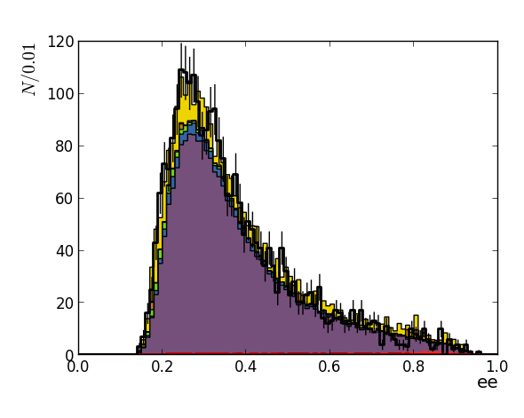
Observable 'ele_3jets_1btag_mttbar':
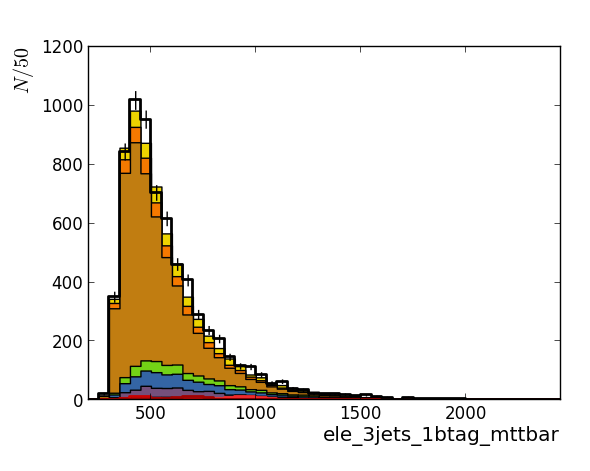
Observable 'ele_4jets_0btag_mttbar':
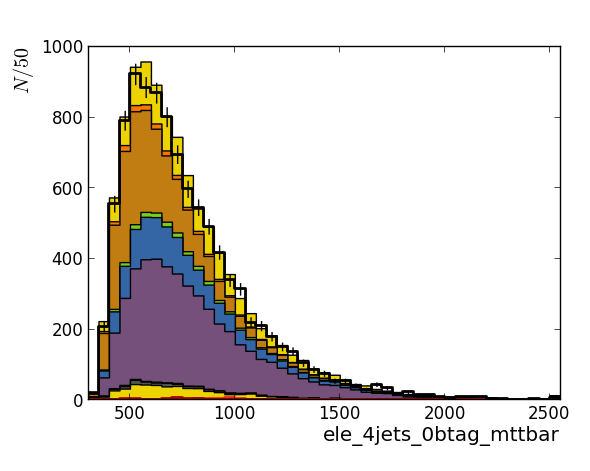
Observable 'ele_4jets_1btag_mttbar':
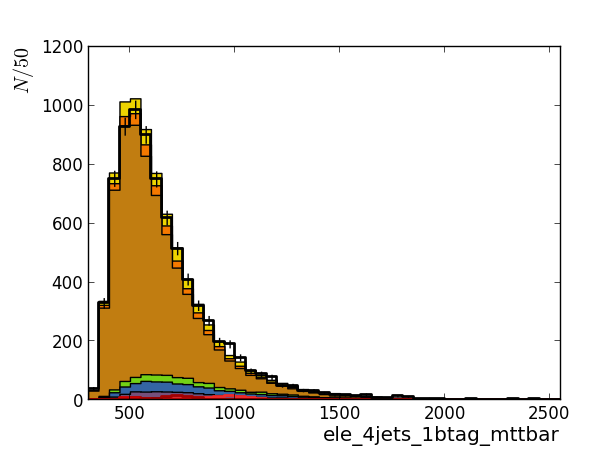
Observable 'ele_4jets_2btag_mttbar':
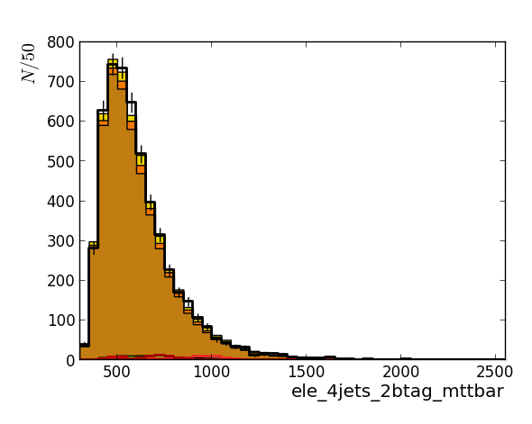
Observable 'emu':
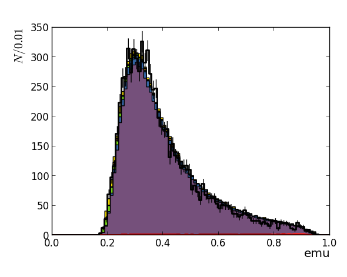
Observable 'mu_3jets_1btag_mttbar':
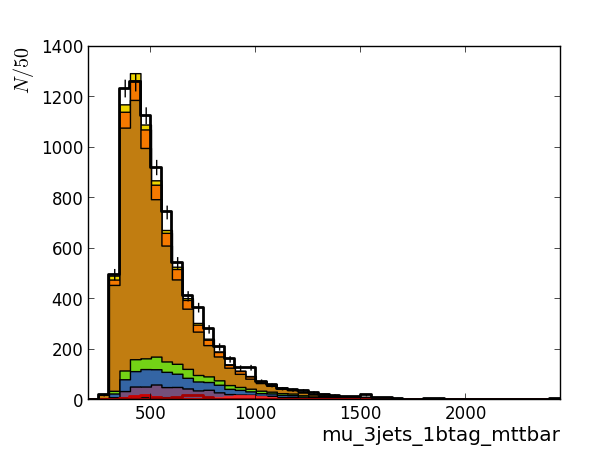
Observable 'mu_4jets_0btag_mttbar':
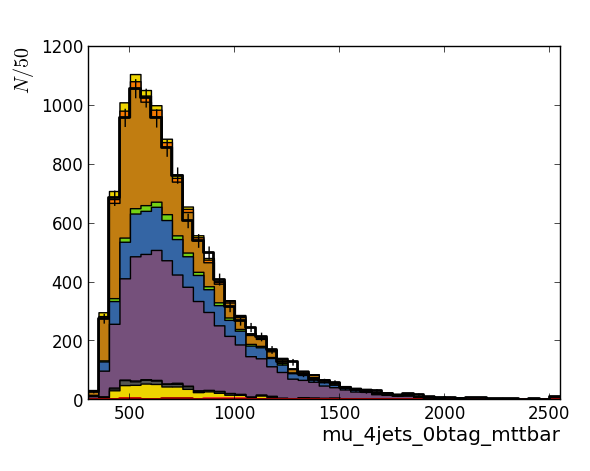
Observable 'mu_4jets_1btag_mttbar':
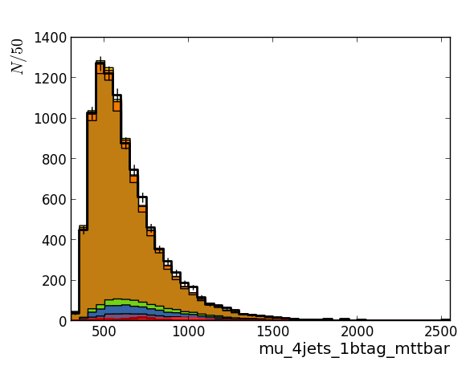
Observable 'mu_4jets_2btag_mttbar':
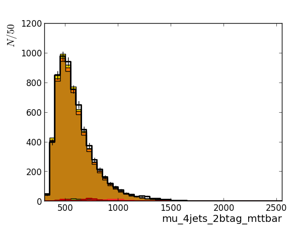
Observable 'mumu':
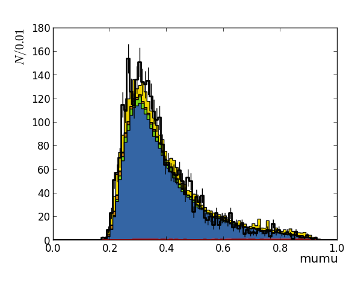
This page was generated at 2012-07-31 13:59:36.615038 for workdir '/Users/jan/Statistics/theta_testing/DilepTest/analysis_default_lowmass'.